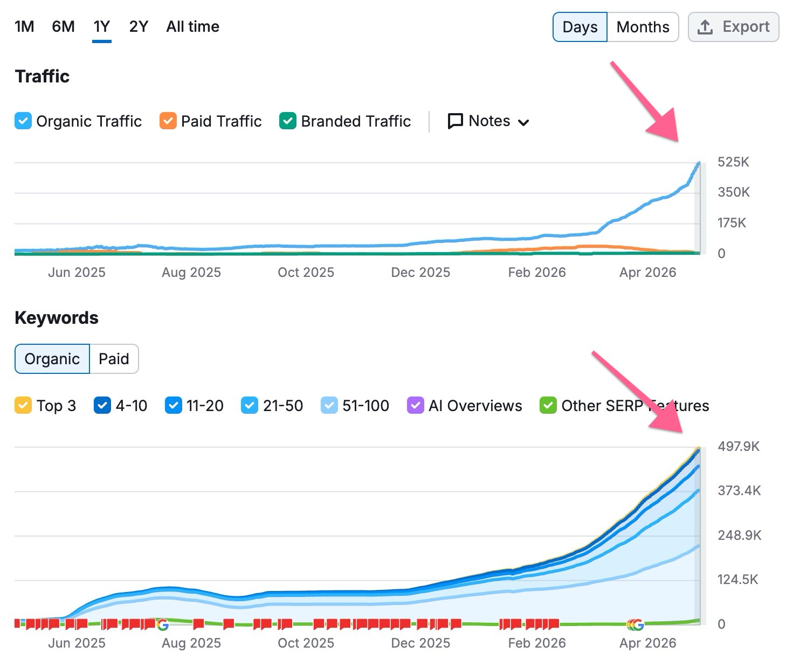

You've built one of the biggest injury-law content libraries in the Carolinas. The next client is asking ChatGPT and Google's AI which lawyer to call, and those answers are built from sites you don't own. Here's how we get Shane Smith Law into them.
We read your sitemaps end to end and ran eight injured-person searches across your markets. Four numbers tell the story.
Everything below comes from your public site and sitemaps, read on October 2, 2026.
Practical answers on contingency fees, MMI, rideshare DUI crashes, and road-defect claims. New posts went up the morning we looked.
A full /es/ mirror with city pages, FAQs, and blog posts. Very few Charlotte injury firms serve Spanish-speaking clients this well online.
Plus TikTok and Instagram. That's a lot of firsthand attorney expertise, and most of it hasn't been turned into written answers yet.
North Carolina, South Carolina, and Georgia, with individual bio pages. Named experts are exactly what AI tools look for on legal questions.
Your site says it plainly. A single clear specialty is easier for AI tools to repeat than a general-practice pitch.
Your robots.txt allows AI search and an llms.txt file is published. Many firms block these crawlers by accident.
Run October 2, 2026 on DuckDuckGo, which draws on Bing's index. That's the same index ChatGPT search leans on. A snapshot, not a ranking report.
| Search | Shane Smith Law | Directories & roundups in top 10 | Who showed up |
|---|---|---|---|
| charlotte car accident lawyer | #9 | 0 | Law firms only, no directories |
| charlotte personal injury lawyer | ✕ | 3 | Morgan & Morgan, Thumbtack, Justia, Avvo |
| raleigh car accident lawyer | ✕ | 2 | Super Lawyers, Expertise, Whitley, Lanier |
| atlanta truck accident lawyer | ✕ | 1 | Fried Goldberg, Bader, Expertise |
| greenville sc personal injury lawyer | ✕ | 6 | Super Lawyers, Avvo, Justia, Yelp, Expertise, Lawyers.com |
| concord nc car accident lawyer | ✕ | 3 | Thumbtack, Expertise, Lawyers.com |
| gastonia personal injury attorney | ✕ | 3 | Morgan & Morgan, FindLaw, Justia, Lawyers.com |
| best personal injury lawyer charlotte reddit | ✕ | 10 | Two Reddit threads, Expertise, Justia, Forbes, local roundups |
| Total | 1 / 8 | 7 / 8 |
English city and practice pages by market, counted from your page sitemaps. Raleigh is the second-largest metro in North Carolina and has a tenth of Charlotte's coverage.
Legal content gets judged harder than most. Google and AI tools want to see who wrote it, who checked it, and whether other sites agree. Everything here was visible from outside your site.
| What we found | Where | Why it matters | Effort |
|---|---|---|---|
| No attorney review shown on blog posts The post we checked is bylined to someone outside your 17-attorney roster, with no "reviewed by" attorney line | Blog | Injury law is "your money or your life" content. Named attorney review is a trust signal | Low |
| llms.txt is the default Yoast export It opens with a trucking page and a Spanish FAQ, not your homepage, practice areas, or attorneys | /llms.txt | A curated file tells AI tools which pages matter most | Low |
| Directories own the comparison searches Justia, Avvo, Expertise, Super Lawyers, Lawyers.com, and Thumbtack appeared in 7 of 8 searches | Off-site | Those profiles feed AI answers. They need to be complete and consistent | Med |
| Thin suburb and secondary-city coverage 2 pages each for Concord, Huntersville, Matthews; 8 each for Raleigh, Greensboro, Fayetteville | City pages | No local depth means no local answer | Med |
Getting Shane Smith Law named when someone who just got hurt asks an AI assistant which lawyer to call in Charlotte, Raleigh, Greenville, or Atlanta.
ChatGPT, Google's AI Overviews, and Perplexity don't read 1,456 blog posts and decide. They summarize what they find about you across your site, legal directories, review sites, roundups, and Reddit.
| AI tool | Leans heavily on |
|---|---|
| Google AI Overviews / AI Mode The AI answer at the top of Google | Your site, Google Business Profile, reviews |
| ChatGPT Search answers | Bing's index, directories, "best lawyer" roundups, Reddit |
| Perplexity Cites sources inline | Reddit, forums, recent articles |
| Gemini Android and Google apps | Google's index and Maps data |
AI tools repeat facts they see stated the same way in many places. We pick the facts, publish them everywhere they belong, and keep testing until the answer matches.
Shane Smith Law is a Charlotte firm that handles personal injury cases only. It has 17 attorneys across North Carolina, South Carolina, and Georgia and offers a free case review, working on contingency so you pay no attorney fee upfront. It also serves clients in Spanish and publishes a large free library of answers on car accident claims.
Every claim here comes from your own site. We'll confirm wording with your team before anything goes live, and nothing claims results or rankings your bar rules don't allow.
Fix the facts, get mentioned where AI tools read, then measure against the baseline and put more into whatever worked.
An AI-powered content engine that builds entity-rich content architectures for compounding authority. The same engine behind 4+ years of zero-penalty growth across our portfolio.
The pattern is consistent across every client we run this for. Each pillar reinforces the others. That's why it compounds instead of plateauing like one-off content.
Topic clusters built around entities Google already understands: hubs and spokes that establish real subject authority.
Every new article strengthens the ones before it. Authority flows through the cluster instead of leaking out.
Expert-cited drafts, edited and posted to your CMS for approval. Content built on facts, not prompts, which is why it survives updates.
Anonymized client (under NDA). Started at 8,500 monthly organic visitors. Twelve months later: half a million per month, still climbing. The same ClusterMagic engine we'd run for you, with 4+ years of zero-penalty results across our portfolio.

Live SEMrush data: organic traffic and keywords climbing together, the signature of a compounding content engine.
Six clusters, ordered by how much ground there is to gain. Each article links to the matching city and practice page, so the library points traffic at pages that produce calls. Volume per month depends on the tier you pick on the next slide.
| Cluster | Pages today | Example articles | Feeds these pages |
|---|---|---|---|
| Charlotte suburbs Concord, Huntersville, Matthews, Gastonia | 2–8 each | What to do after a crash on I-85 in Concord · Huntersville accident reports: how to get yours · Matthews rear-end collisions near Independence Blvd | Suburb landing pages, Charlotte car accident hub |
| Triangle and Triad Raleigh, Greensboro | 8 each | Wake County crash data, explained · Truck accidents on I-40 through Greensboro · Rideshare accidents in Raleigh: whose insurance pays | Raleigh and Greensboro practice pages |
| Military families Fayetteville | 8 | Car accident claims for Fort Bragg service members · When the other driver is on active duty · TRICARE liens after an injury settlement | Fayetteville pages |
| South Carolina Greenville, statewide | 27 + 9 | South Carolina's modified comparative fault rule · I-85 and I-385 crash claims in Greenville · SC vs NC: why your injury claim works differently | Greenville and SC pages |
| Atlanta metro Clayton County, Peachtree City | 2–27 | Accidents near Hartsfield-Jackson: who's liable · Georgia's two-year filing deadline · Golf cart accidents in Peachtree City | Atlanta, Clayton, Peachtree City pages |
| Video to text Podcast and video library | 346 episodes | Written answer pages built from your attorneys' own podcast and video explanations, attributed to them by name | Attorney bios, FAQ hub |
Every line below stands on its own. Start with one, add the next when it earns its place. Pricing from EmberTribe's current rate card.
| Articles / mo | Monthly | 3-month commit |
|---|---|---|
| 25 | $1,000 | $883/mo |
| 40 | $1,500 | $1,300/mo |
| 50 | $1,750 | $1,533/mo |
| 100 | $3,000 | $2,633/mo |
| Line | Monthly |
|---|---|
| Reddit AEO placements Disclosed replies in local and legal-advice threads | from $1,400 |
| Brand mentions · 2 / mo Third-party roundups and reviews on DR 30–60 sites | $1,498 |
| Brand mentions · 5 / mo | $3,748 |
| Brand mentions · 10 / mo | $7,123 |
| Editorial backlinks DA40+ or DA50+, pointed at city pages | Quoted per link |
Each takes about five minutes:
Then we'll get back on a call, choose your lines from the menu, and lock the first month of work.
Reply to TJ →Sources: search spot check run October 2, 2026 on DuckDuckGo (top ten web results per query; a snapshot, not a ranking report). Page, post, and market counts from shanesmithlaw.com sitemaps on October 2, 2026; market counts are English pages only. Site findings from a review of shanesmithlaw.com, its llms.txt, robots.txt, and a sample blog post on the same date. Pricing from EmberTribe's current rate card.